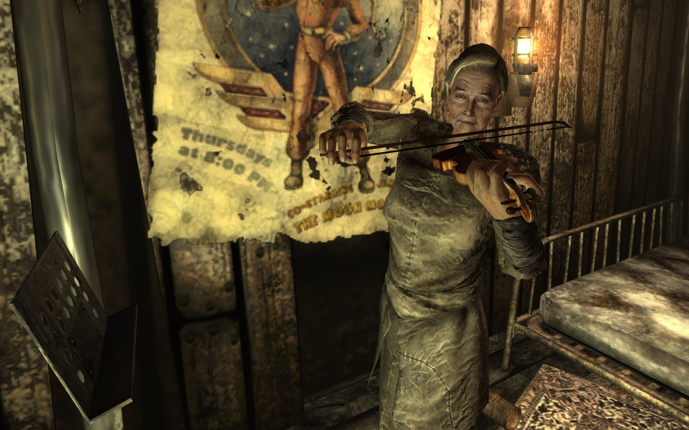
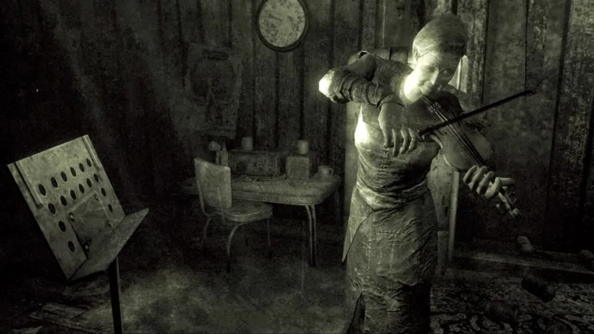
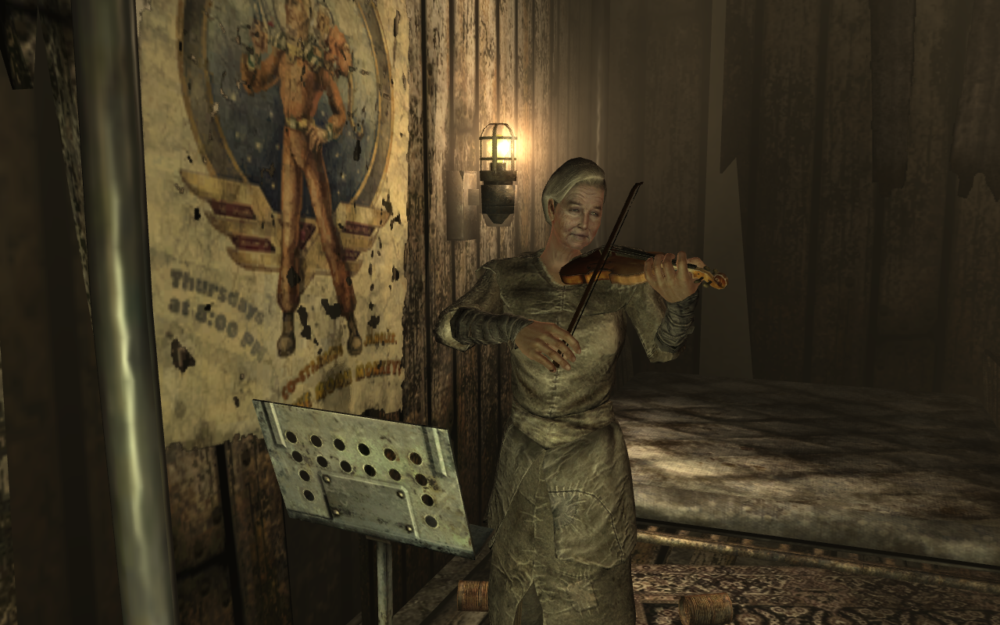

アガサ (Agatha)
概要
アガサは、キャピタル・ウェイストランドの北、岩場に隠れるように建つ「アガサの家」で一人暮らす76歳の老婦人である。彼女は亡き夫が遺した無線機を使い、自身が演奏するヴァイオリンの旋律を「アガサのラジオ局 (Agatha's Station)」としてウェイストランド全土に放送している。その穏やかな口調と美しい調べは、過酷な荒野を旅する者たちにとって一時の安らぎとなっている。彼女は戦前から続く高名な音楽家系「エッグレブレヒト家」の末裔であり、ウェイストランドで失われつつあるクラシック音楽の伝統を守り続けている数少ない人物の一人である。
背景と家族の歴史
音楽家の血筋
アガサは、代々優れたクラシック音楽家を輩出してきた家系に生まれた。彼女の高祖母であるヒルダ・エッグレブレヒト (Hilda Egglebrecht)は、世界最高峰のヴァイオリニストの一人として知られ、2077年の大戦直前には、音楽的才能の保存を目的としたVault 92へと招かれた。
アガサは、ヒルダが娘のメアリー（アガサの曾祖母）に宛てて書いた手紙や日記の記録を通じて、この家族の歴史を知ることとなった。これらの手紙は一種の日記のようなもので、メアリーから代々アガサへと受け継がってきた。彼女は、ヒルダが世界に数本しか存在しない伝説的なヴァイオリン「ソイル・ストラディバリウス (Soil Stradivarius)」と共にVaultへ入ったことを確信している。
アガサは高祖母がVault内で命を落とすことになったVault-Tecの実験については知らないが、日記からストラディバリウスが特注の加圧ケースに保管されていることを突き止めており、ヴァイオリンが完璧な状態で残っていると信じている。しかし、高齢であることとVault 92の場所を知らないことが、彼女自身の回収を阻んできた。
夫との生活と孤独
アガサの家は、彼女の亡き夫が風雨や外部の脅威から身を守るために建設したものである。かつて二人は世間から隔絶したこの場所で、互いを唯一の話し相手として幸せな数年間を過ごした。夫はアガサに身を守るための術（銃の扱いなど）を教えたが、彼女自身は平和主義者であり、実際に銃を撃ったことはない。夫は家以外にも、弾薬箱やユニーク武器「ブラックホーク」、そしてラジオ設備を彼女に遺した。
夫の死後、彼女は深い孤独に陥ったが、巡回する商人キャラバンとの交易を通じて外界との接点を保っている。彼女は自分の音楽を聴かせる代わりに、生活に必要な物資を受け取っている。彼女は自作の手製ヴァイオリンを使用しているが、調律が狂いやすく、常にメンテナンスが必要であるという問題を抱えている。楽器の不安定さから、彼女は取引の継続に不安を感じており、伝説的な楽器の回収を放浪者に託すことになる。
性格と哲学
アガサは教育水準が高く穏やかな口調で、ストラディバリウスの歴史や、その制作者であるアントニオ・ストラディバリについての知識も持っている。彼女は、戦前のような方法で楽器を作ることができなくなったこと、そして高祖母のストラディバリウスが世界に現存する最後の「本物」のヴァイオリンかもしれないという事実に悲しみを感じている。彼女は、それぞれのストラディバリウスが「芸術作品」であることに魅了されており、それを家族の家宝と考えている。
諺と教訓
彼女には諺（ことわざ）を引用して話す癖があり、話を聞かずに急かされると、ヒッポのアウグスティヌスの「忍耐は知恵の伴侶である」や、母親が言っていたオランダの格言「一つかみの忍耐は、一ブッシェルの知性よりも価値がある」を引用して放浪者をたしなめる。また、夫の死を軽視された後に謝罪されると、夫の教えである「常に許し、忘れなさい」に従って和解に応じることもある。
商人たちとの友情
深い孤独の中にありながらも、彼女は週に一度訪れる商人たちと強い絆を築いている。ラジオ放送では彼らへの個人的な感謝を述べる姿が聞ける。キャラバンのクロウ (Crow)を「愛しい人」と呼んで話し相手になってくれることに感謝し、ドック・ホフ (Doc Hoff)には健康を守ってくれている礼を言い、クレイジー・ヴォルフガング (Crazy Wolfgang)については「彼ほど珍しい品を見つけてくる男はいない」と冗談を飛ばしている。これらは、彼女にとって音楽が単なる娯楽ではなく、コミュニティを繋ぎ止める重要な手段であることを示している。
一方で、礼儀を重んじる彼女は無礼な態度を嫌う。特に、信頼して託したソイル・ストラディバリウスを他者に売却したことが発覚した場合、激昂して放浪者を「ろくでなし (son of a bitch)」と呼び、二度と家に入れないこともある。
サイドクエスト: Agatha's Song (アガサの歌)
アガサは長年、自分が使用している「手製の不完全なヴァイオリン」に不満を抱いており、先祖が遺した「ソイル・ストラディバリウス」をVault 92から回収することを夢見ている。彼女はその回収を放浪者に依頼する。なお、放浪者が極めて不遜な態度を取り続けた場合、彼女は協力を拒否し、クエストが開始できなくなる可能性がある。
報酬と展開
- アガサのラジオ局 (Agatha's Station): ヴァイオリンを無償で渡した場合、ウェイストランド全土で彼女の放送が聴けるようになる。
- ブラックホーク (Blackhawk): クエスト中に「楽譜の入った本」をアガサに渡すと、報酬として夫の形見である強力な.44マグナムを譲り受けることができる。
- 弾薬箱の鍵: 説得や特定のパーク（Lady Killer等）があれば、クエスト開始時に彼女の弾薬箱（ミニ・ニューク等を含む）の鍵を入手可能。なお、彼女を殺害した場合もこの鍵を入手できる。
アガサのラジオ局 (Agatha's Station)
ヴァイオリンの回収後（あるいは手製の楽器で）、彼女は夫の遺した機材を使って放送を行う。この放送はライブではなく、すべて事前に録音されている。そのため、もしアガサが不慮の死を遂げたとしても、キャピタル・ウェイストランドの空には彼女の調べが響き続けることになる。
主な楽曲リスト
- ヨハン・セバスティアン・バッハ: パルティータ第3番「ジグ」
- ヨハン・セバスティアン・バッハ: パルティータ第3番「プレリュード」
- ヨハン・セバスティアン・バッハ: ソナタ第2番「グラーヴェ」
- アントニン・ドヴォルザーク: ヴァイオリン協奏曲 イ短調 作品53
- パブロ・デ・サラサーテ: ツィゴイネルワイゼン 作品20
印象的な台詞
「ああ... なんてこと。私が想像していたよりも、ずっと美しいわ！」 — ソイル・ストラディバリウスを手にした時の言葉
「生意気言わないの、この生意気キャプテンさん（Captain sassy-pants）！」 — 失礼な態度を取る放浪者に対して
「友情はヴァイオリンのようなものですわ。たとえ音楽が止まっても、弦は残りますの。」 — 亡き夫の言葉を引用して
「忍耐は知恵の伴侶である、という有名な言葉があります。黙って私の話を聞いていれば、何か学べるかもしれませんよ。」 — 話を遮る放浪者に対して
ギャラリー
アガサ (Fallout 3)

ヴァイオリンを奏でるアガサ (Fallout 3)
エンディングスライド1: アガサの歌の成就

エンディングスライド2
アガサ (Fallout Shelter Online)

演奏中のポートレート
血と肉片に塗れたキャピタル・ウェイストランドの探索において、彼女の弾くヴァイオリンの調べはまさに一筋の天上の光です。特に夕暮れの荒野を歩きながら聴く「アガサのラジオ局」は、Fallout 3における屈指の美しい体験であり、滅びた世界に残された「高潔な美」を感じさせてくれます。彼女の家が非常に見つけにくい場所にあるのも、隠れた宝物を見つけたような感慨深さがありますね。
This article was created by translating and editing Agatha from Nukapedia: The Fallout Wiki.
Licensed under the Creative Commons Attribution-Share Alike License (CC BY-SA 3.0).
コミュニティ維持のため、寄付を受け付けております。
> COMMENTS